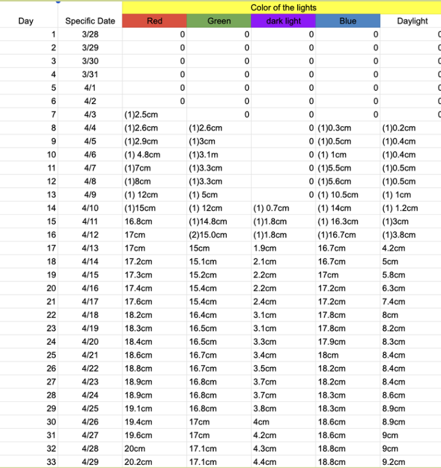
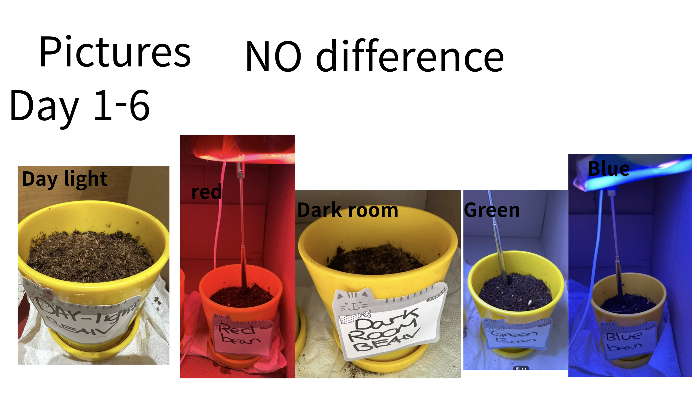
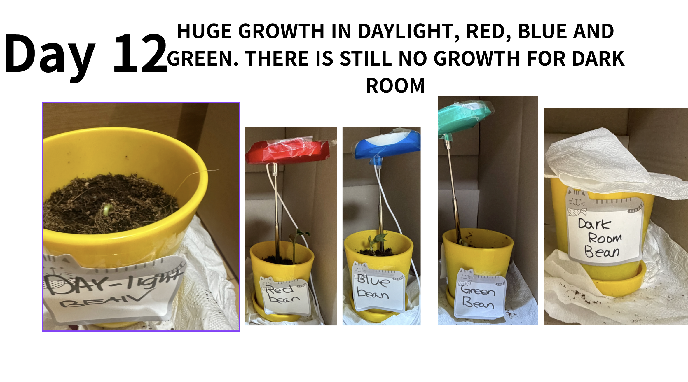
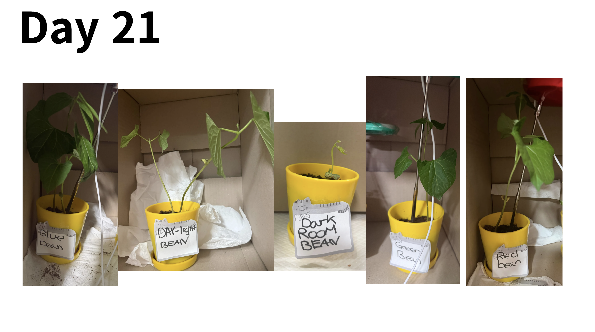
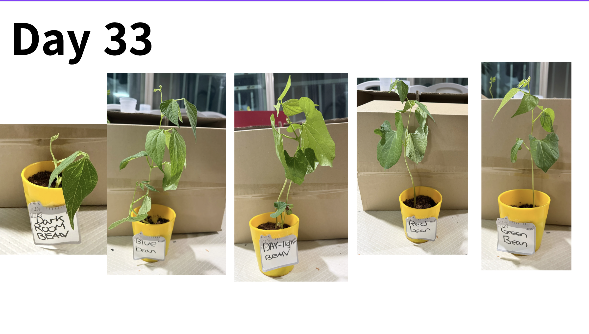
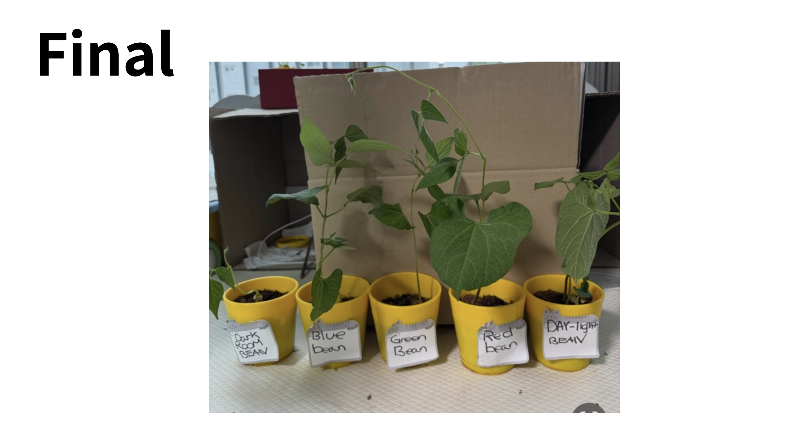

This result shows the red and blue lighted plants. If we look close, we can see that the blue lighted plant is shorter than red but the stem is much more thicker. On the other hand, red light is elongated but has a thin steam.
Why did it come out like this?
Red light serves as the "fuel" in plants. Among all the other lights, red light is considered the cheapest since it has the highest amount of Photosynthetically Active Radiation (PAR) in relation to the energy consumed.Red light is very efficient for photosynthesis, but when it’s used alone, plants behave like they’re in shade. This triggers a response called etiolation, where plants:
grow taller quickly have thinner, weaker stems stretch to “search” for more balanced light Blue light regulates plant shape and development through receptors (like phototropins). It encourages: shorter, more compact growth thicker stems stronger leaves.
The process of the experiment is shown in the picture. We have observed the growth of the plant for a whole month. We can see that the red is longer than the blue plant. However th stem is very thin. One the other hand, the blue plant is smaller but has a very thick stem. At last the red one grew the most with a height of 20.2cm.




